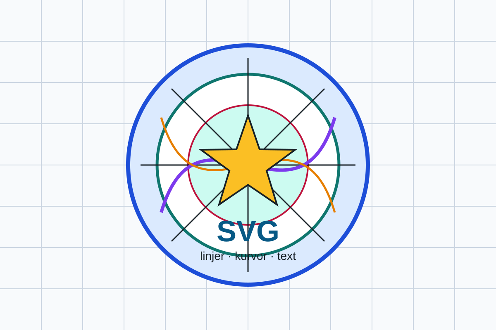

Modul 6 · Kapitel 6.1
Bildformat på webben
Rätt format kan ge tydligare bilder och mindre filer.
Mål
Efter kapitlet ska du kunna...
- känna igen vanliga bildformat
- välja format efter innehåll och användning
- förklara skillnaden mellan pixelbild och vektorbild
Två bildtyper
Raster och vektor
Pixelbild
Zooma in på hundens vänstra öga
Zooma med reglaget och dra sedan bilden med mus eller touch. Vid hög förstoring syns de enskilda pixlarna.

Vektorbild
Zooma i en specialbyggd SVG
Zooma med reglaget och dra sedan bilden till en tunn linje, kurva eller bokstav. Kanterna fortsätter i princip att vara skarpa.

JPEG/JPG
Fotografier med många färger
- Komprimerar fotografier effektivt.
- Använder förstörande komprimering.
- För hård komprimering kan ge artefakter och förlorade detaljer.
- Stöder inte transparens.
PNG
Skarpa detaljer och transparens
- Passar grafik med skarpa kanter.
- Passar skärmbilder.
- Stöder transparent bakgrund.
- Kan bli tungt för stora fotografier.
WebP
Modernt och flexibelt
- Ger ofta mindre filer än JPEG och PNG.
- Kan användas för fotografier.
- Stöder transparens och animationer.
- Är ofta ett bra standardval när projektets stöd och verktyg fungerar.
AVIF
Mycket effektiv komprimering
- Kan ge mycket små filer med hög kvalitet.
- Passar särskilt fotografier.
- Kan vara långsammare att skapa.
- Alla arbetsflöden hanterar inte formatet lika smidigt.
Testa alltid resultatet.
SVG
Skalbar enkel grafik
- Passar logotyper, ikoner och diagram.
- Är vektorbaserat.
- Kan skrivas direkt som kod.
- Passar inte vanliga fotografier.
GIF
Ett äldre animationsformat
- Användes tidigare mycket för enkla animationer.
- Är sällan bästa valet i nya projekt.
- WebP, video eller andra moderna format ger ofta bättre kvalitet och mindre filer.
Komprimering
Gör filen mindre
| Lossy förstörande | Lossless förlustfri |
|---|---|
| Tar bort bildinformation. | Minskar filen utan att kasta bort bildinformation på samma sätt. |
| Kan ge mindre fil men sämre kvalitet. | Bevarar detaljer men kan ge större fil. |
Jämför alltid kvalitet och filstorlek.
Transparens
Genomskinliga delar
Ingen transparens
kan ha transparens
Transparens är användbart när grafik ska ligga ovanpå olika bakgrunder.
Jämförelse
Typ och transparens
| Format | Typ | Transparens | Vanlig användning |
|---|---|---|---|
| JPEG | Raster | Nej | Fotografier |
| PNG | Raster | Ja | Skärmbilder och grafik |
| WebP | Raster | Ja | Foto, grafik, animation |
| AVIF | Raster | Ja | Fotografier |
| SVG | Vektor | Ja | Ikoner och logotyper |
Fotografi
Flera möjliga format
- JPEG är ett etablerat äldre fotoval.
- WebP och AVIF är normalt att föredra för rasterbilder på webben idag.
- I den här kursen använder vi WebP.
- Jämför alltid kvalitet, filstorlek och stöd.
WebP eller AVIF?
Kursens val: WebP
| WebP | AVIF |
|---|---|
| Brett och moget stöd samt smidiga arbetsflöden. | Kan ofta ge ännu mindre filer och hög kvalitet. |
| Används för rasterbilder i kursen. | Bra val när verktyg och önskat stöd är kontrollerade. |
I mer avancerade projekt kan båda formaten användas. Valet beror på kvalitet, filstorlek, kodning och stöd.
Logotyp eller ikon
Välj skalbarhet eller pixelgrafik
- SVG passar enkel grafik som ska skalas.
- PNG och WebP kan användas när pixelbild och transparens behövs.
Interaktiv formatväljare
Vad ska bilden användas till?
Förslaget visar kapitlets vanligaste val. Jämför alltid kvalitet, filstorlek och stöd.
Testa själv
Jämför samma bild
- Öppna samma bild i Squoosh.
- Testa JPEG, WebP och AVIF.
- Jämför vid liknande kvalitet.
- Kontrollera filstorleken.
- Zooma in och leta efter förlorade detaljer eller artefakter.
Var syns skillnaden?
Titta på känsliga bildytor
- Jämn himmel
- Hudtoner
- Mjuka färgövergångar
- Skarpa kanter och liten text
En rörig bild kan dölja komprimeringsfel.
Webbläsarstöd
Kontrollera nyare format
Nyare format kan ge små filer, men projektets webbläsare och verktyg måste kunna hantera dem.
Can I Use visar stöd för olika format i webbläsare.
Stöd är en del av formatvalet.
Inget format vinner alltid
Välj efter situationen
- Vad innehåller bilden?
- Hur viktig är filstorleken?
- Behövs transparens?
- Vilken kvalitet krävs?
- Vilket webbläsarstöd behövs?
- Hur ska bilden användas?
Sammanfattning
Kom ihåg
- JPEG, PNG, WebP och AVIF är rasterformat.
- SVG är vektorbaserat och skalbart.
- JPEG passar ofta foto men saknar transparens.
- PNG passar skarpa detaljer och transparens.
- WebP och AVIF kan ge små filer med bra kvalitet.
- Formatet ska väljas efter bildens uppgift.